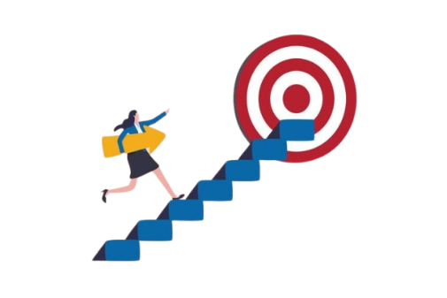

Overview
ESTJs are classic images of the model citizen: they help their neighbours, uphold the law, and try to make sure that everyone participates in the communities and organisations that they hold so dear. ESTJs lead by example, demonstrating dedication and purposeful honesty and an utter reflection of laziness and cheating. ESTJs are dedicated individuals who pride themselves on always finishing what they start, rendering them reliable and trustworthy.
Strengths

ESTJs have no problem distributing tasks and responsibilities to others fairly and objectively, making them excellent administrators. Often refusing to cut corners, they showcase their dedication through their unwavering commitment to high standards. In fact, they tend to strive for perfection in most things that they take on in life.
Weaknesses

ESTJs are strong adherents to tradition. When suddenly forced to try unvetted solutions, they become uncomfortable and stressed. The problem with being so fixated on what works is that ESTJs often dismiss might work better. Everything is opinion until proven, and they are reluctant to trust an opinion long enough for it to have that chance.
Relationships
Romantic: There are certainly challenges, but ESTJs take their relationships seriously and are willing to put a tremendous amount of effort into ensuring that they remain strong and committed. ESTJs address conflict head-on with simple statements of fact, a very rational approach but subtlety and emotional tact are sometimes sacrificed in the process.

Friendships: ESTJs value relationships that provide them with a sense of stability and foster a shared commitment to upholding high standards and shared values. ESTJs show themselves to be outgoing and enthusiastic, always more than happy to bring others along for some healthy sport or outdoor activity.
Famous People

Career Paths
- Physician
- Chef
- Attorney
- Farmer
- Office Manager
- Flight Engineer
- Public Administrator
- Sales Manager
- Police Officer